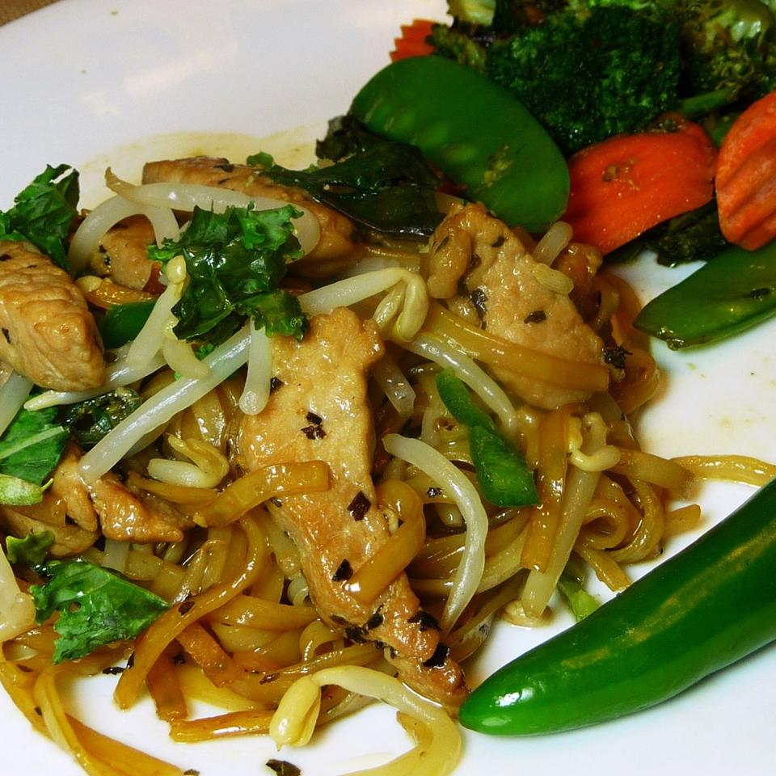

Pad Kee Mao

Also known as "Drunken Noodles", this Thai dish is a delicious family recipe. Send noods!
- 1 teaspoon white sugar
- 1 teaspoon salt
- .5 cup bean sprouts
- .5 teaspoon thick soy sauce
- 2 teaspoons white sugar
- 1.5 teaspoons olive oil
- 2 cloves garlic, minced
- .5 pound pork (any cut), thinly sliced
- 1 serrano pepper, minced, or more to taste
- 30 fresh basil leaves, chopped
- 3.5 ounces dried Thai-style rice noodles, wide (such as Chantaboon Rice Noodles)
- 1.5 teaspoons olive oil
- 2 cloves garlic, minced
Steps:
- Place the dry rice noodles in a bowl, cover with hot water,
and let soak until white and softened, about 1 hour. Drain the noodles, and set aside.
- Heat 1 1/2 teaspoon of olive oil in a wok or large skillet over low heat, and cook and stir
2 minced garlic cloves until brown and beginning to crisp, 2 to 3 minutes.
Stir in the soaked noodles, 1/2 teaspoon of thick soy sauce, and 2 teaspoons of sugar,
and cook and stir until the noodles have absorbed the soy sauce and turned brown,
about 3 minutes. Remove the noodles from the skillet.
- Heat the remaining 1 1/2 teaspoons of olive oil in the wok over low heat;
stir in the remaining 2 minced garlic cloves,
and cook until brown and beginning to crisp, 2 to 3 minutes.
Raise the heat to medium-high, and stir in the pork, serrano pepper, basil,
1/2 teaspoon thick soy sauce, 1 teaspoon sugar, and salt.
Cook and stir until the pork is no longer pink and the edges of the meat are beginning to brown,
about 5 minutes. Return the noodles to the wok, and stir in the bean sprouts.
Cook and stir until heated through, about 5 more minutes.